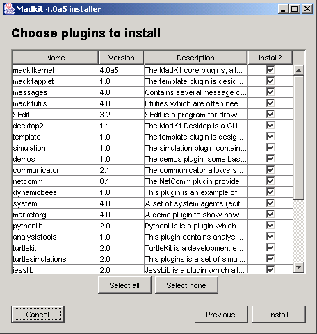

MadKit itself is written in 100% pure Java, so you will need a properly installed Java Virtual Machine. We have tested MadKit with the java virtual machine provided by Sun
MadKit 4 requires a Java 2 1.4 JVM (or above) to work properly. Some parts may work with 1.3, but we now use JDK 1.4 to test MadKit.
MadKit has been tested on the following platforms: Windows (98/2000/XP/NT), Linux (x86/PC) and MacOS X. (beware: the integration is not complete on the Mac. For instance cut/copy/paste still uses the ctrl-x/c/V keys and not the cmd-x/c/v keys as other softwares on the Mac, this will be done in future releases).
We will suppose that you have installed a Java 2 development environment. You can verify your Java version in a shell with the -version command-line option:
java -version java version "1.4.0" Java(TM) 2 Runtime Environment, Standard Edition (build 1.4.0-b92) Java HotSpot(TM) Client VM (build 1.4.0-b92, mixed mode) |
If you plan to develop agents, for the moment you will certainly need to install the Apache Ant Java-based build tool. You will need the version 1.6.0 of Ant (or above) to develop java agents with MadKit.
Download a MadKit archive and start the install process by typing the following command at a terminal (or shell) prompt:
$ java -jar madkitinstall.jar |
and follow the on screen instructions.
At the last screen, you may choose the plugins that you want to have installed in MadKit:

You do not need to install all the plugins of MadKit. You may install any number of plugins that you may need for your application. If you click on only one plugin, all the files needed to make this plugin work will be automatically installed, so you don't need to know the dependencies between plugins.
To work properly, agents of the JessAgent class need a specific library, called jess.jar. Due to the special License of Jess, it is not possible for MadKit to distribute this library. You must get the jar archive directly from Sandia the owner of Jess.
First, go to the Sandia
download area, download the jar corresponding to Jess 6.0 or above, rename
it to jess.jar and put it in the libs/support directory,
overwriting the old jess.jar. Then start again MadKit. The new Jess
archive will be taken into account directly.
You may still use MadKit without Jess. Everything, but instances of JessAgent and the JessEditAgent work fine wihout having the Jess archive installed.
We are very sorry for this inconvenience, Jess is a good product, but its license is terrible. We are looking for a good free replacement of Jess. Any information about such a product would be appreciated.
Note: if you have any trouble installing Jess on MadKit, contact <ferber@madkit.org>
Due to its modular and micro-kernel based architecture, it is possible to start MadKit in several ways:
with the standard agent launching and development environment, the Madkit desktop,
as an applet embedded into HTML pages using the MadKit applet kernel
without any environment using the console booter.
starting a specific plugin at the console. {{link}}